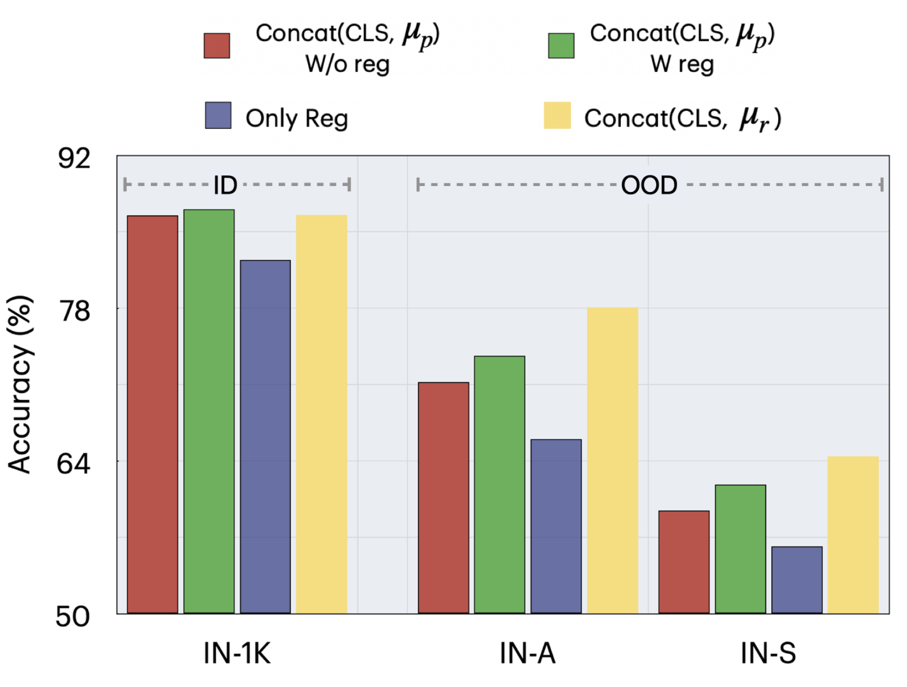
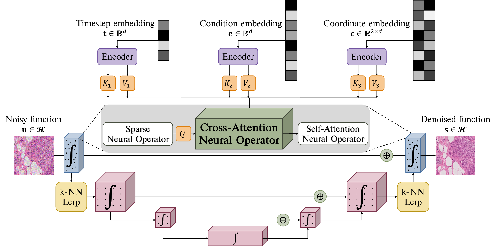

I am a PhD student in the Computer Science department at Stony Brook University, advised by Dimitris Samaras. My research is focused on Generative models for Computer Vision. Before this, I was a Software Engineer at Bloomberg LP, where our team built an ETL pipeline for the ingestion of third-party data.
In 2020, I obtained my Master's in Computer Science from NYU, where I worked with Kyunghyun Cho's group on Similarity of Neural Networks, and interned at IBM Watson Health.
Previously, I obtained a B.Tech in Electrical Engineering from Indian Institute of Technology, Hyderabad, where I worked with Sumohana Channappayya on Image Processing. I interned at Video Analytics Lab, IISc Bangalore.
In my free time, I enjoy playing video games and reading fantasy novels. I'm a big fan of strategy games, such as Dota 2 and Age of Empires 2.
News
- [Dec 2024] LLNL internship research on ViT robustness was accepted at ICASSP 2025.
- [July 2024] ∞-Brush was accepted at ECCV 2024.
- [Feb 2024] Our large image generation research was accepted at CVPR 2024.
- [Oct 2023] PathLDM was accepted at WACV 2024.
- [Aug 2023] Our study on conditional generation with denoiser representations was accepted at BMVC 2023.
- [Aug 2022] Started my PhD at Stony Brook University.
Publications / Pre-prints
|

Srikar Yellapragada, Kowshik Thopalli , Vivek Narayanaswamy, Wesam Sakla, Yang Liu, Yamen Mubarka, Dimitris Samaras , Jayaraman J. Thiagarajan ICASSP, 2025 Paper Registers make ViTs robust |

Alexandros Graikos*, Srikar Yellapragada*, Minh-Quan Le, Saarthak Kapse , Prateek Prasanna , Joel Saltz, Dimitris Samaras CVPR, 2024 Paper / Project Page / Code We condition latent diffusion models with SSL embeddings and generate large images in histopathology and satellite imagery. |
|

Minh-Quan Le* , Alexandros Graikos* , Srikar Yellapragada, Rajarsi Gupta , Joel Saltz , Dimitris Samaras ECCV, 2024 Paper / Project Page / We introduce the first conditional diffusion model in functional space. |

Srikar Yellapragada*, Alexandros Graikos*, Prateek Prasanna, Tahsin Kurc, Joel Saltz, Dimitris Samaras WACV, 2024 Paper / Project Page / Code We build a text-conditioned LDM for histopathology using GPT-summarized text reports and CLIP embeddings. |

Alexandros Graikos*, Srikar Yellapragada*, Dimitris Samaras BMVC, 2023 Paper / Code / Poster We condition unconditional models in limited data scenarios using an auxiliary network built upon denoiser representations. |

Manikanta Srikar Yellapragada Master's Thesis, 2020 Paper Short answer: NO. |

Manikanta Srikar Yellapragada, Yiting Xie, Benedikt Graf, David Richmond, Arun Krishnan, Arkadiusz Sitek ISBI, 2020 Paper |

Luyao Shi, Deepta Rajan, Shafiq Abedin, Manikanta Srikar Yellapragada, David Beymer, Ehsan Dehghan MIDL, 2020 Paper |

Konkimalla Chandra Prakash, Y.M.Srikar, Gayam Trishal, Souraj Mandal, Sumohana S. Channappayya ICIP, 2018 Paper / Code |
{kind=link}
{kind=link}